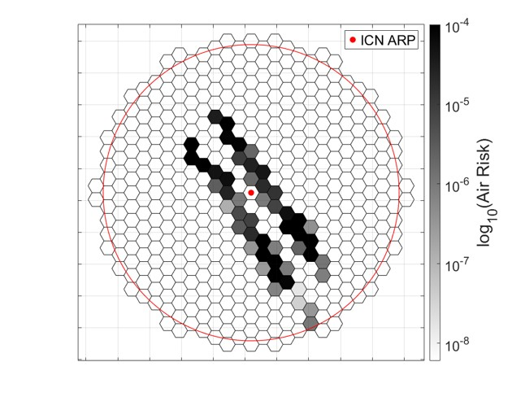

Decentralized UAS Traffic Management
Game-theoretic bilateral and multilateral negotiation methods for resolving conflicts among UAS traffic management service providers, with a focus on system efficiency and fairness.
UAS Traffic Management · Advanced Air Mobility
M.S. Student in Advanced Air Transportation
Korea Aerospace University
I am ready to pursue long-term, passionate research to realize UTM and AAM operations.
My research focuses on UTM and AAM for safe, efficient, and scalable operations. During my M.S. program in Advanced Air Transportation at Korea Aerospace University, I conducted research under the supervision of Prof. S. H. Kim, focusing on decentralized traffic management, multi-agent conflict resolution, strategic path planning, and GIS-based airspace network design. My previous research experience includes air risk analysis and ground risk analysis. Building on these experiences, my current research focuses on game-theoretic and optimization-based approaches to managing large-scale UAS operations and designing realistic urban airspace networks. After completing my M.S. degree, I plan to pursue a Ph.D. to further advance my research in UTM and AAM.
Research Portfolio
Game-theoretic bilateral and multilateral negotiation methods for resolving conflicts among UAS traffic management service providers, with a focus on system efficiency and fairness.

GIS-based low-altitude network design and scalable path planning for high-density drone delivery, incorporating operational constraints and ground-risk considerations.

Spatial air-risk assessment using ADS-B traffic data to identify operational exposure patterns in airport airspace.

GIS-based assessment of population exposure and potential ground consequences associated with low-altitude UAS operations in urban environments.
Research Output
Transportation Research Part A: Policy and Practice, under review, 2026.
IEEE Transactions on Intelligent Transportation Systems, manuscript in preparation, 2026.
AIAA AVIATION 2026 Forum, 2026.
KSAS 2025 Fall Conference, 2025.
The Society for Aerospace System Engineering 2025 Spring Conference